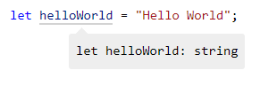
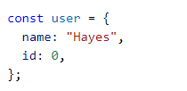
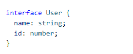
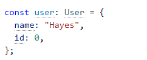
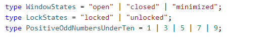
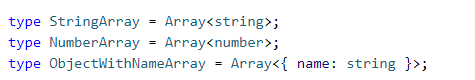
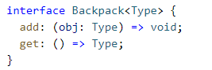
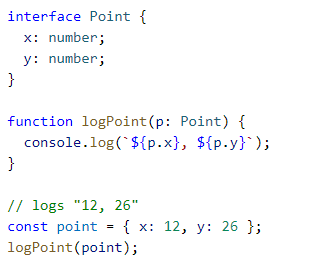

Typescript offers all of JavaScript's features as well as an additional type system.
Inferred Types
Typescript can often infer the intended variable types based off of the type they are initially set to and will generate them automatically.
In many if not most cases, you won't need to worry about defining any type, just make sure not to accidentally change it!

Defined Types
Some design methods in JavaScript make it difficult for TypeScript to infer types.
In this case, it can be useful to define your intended types.



Composed Types
In TypeScript, you can create your own types. You declare a new type using the
type keyword. Two popular ways to do so are using unions and generics.
Unions
Unions can be used to declare a type that can be one of many different states, much like an enumeration.
For example: a boolean variable can be either true or false, so a boolean would be declared with unions as type MyBool = true | false;

Generics
Generics provide variables to types. Commonly, these are arrays.

You may also declare your own types that use generics.

Structural Types
A core principle of TypeScript is that it checks the
shape that values have. This is known as
duck typing or
structural typing.
If two objects have the same shape, TypeScript assumes them to have the same type, even if they are not declared so.

In the example above, the variable point is never declared to be of type Point, but it is assumed to be one because of it's shape.